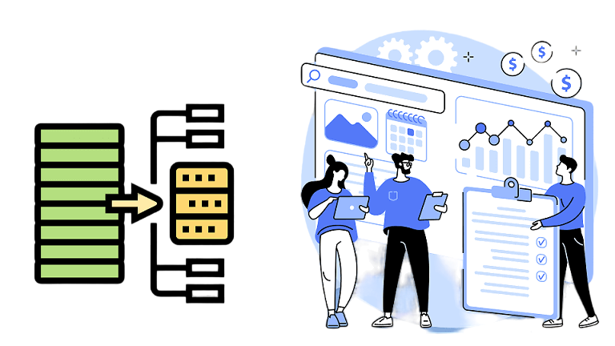
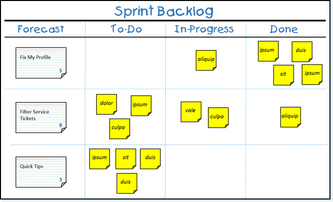
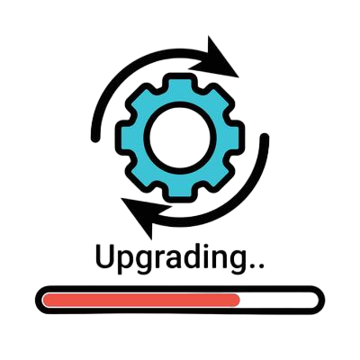

Os artefatos no Scrum são as ferramentas e produtos tangíveis criados durante o processo.
Eles fornecem informações sobre o progresso do trabalho e ajudam a equipe a manter o foco na entrega de valor.
1. Product Backlog (Backlog do Produto):

Descrição:
O Product Backlog é uma lista priorizada de tudo o que precisa ser feito para o produto.
O Product Owner é responsável por mantê-lo atualizado e priorizado, de acordo com o
valor que cada item traz para o negócio.
Exemplo:
Funcionalidades principais, melhorias, correções de bugs, requisitos técnicos, entre outros.
Detalhes importantes:
O Product Backlog está sempre mudando, à medida que novos requisitos são descobertos e
antigos são removidos ou reordenados.
2. Sprint Backlog (Backlog da Sprint):

Descrição:
Durante o Planejamento da Sprint, o time de desenvolvimento escolhe itens do
Product Backlog para trabalhar durante a sprint. Esses itens formam o Sprint Backlog. Além disso,
o time define um plano para atingir a meta da sprint.
Exemplo:
Um Sprint Backlog pode incluir tarefas como "Desenvolver interface de login" ou
"Criar testes automatizados para o módulo de pagamento".
3. Incremento:

- Descrição:
O Incremento é o conjunto de todos os itens concluídos no Sprint Backlog, mais o valor acumulado de todas as
sprints anteriores. Um incremento deve ser sempre algo que pode ser usado ou liberado.
- Exemplo:
Um incremento pode ser uma nova versão do software com novas funcionalidades e correções de bugs
, prontas para serem implementadas no ambiente de produção.